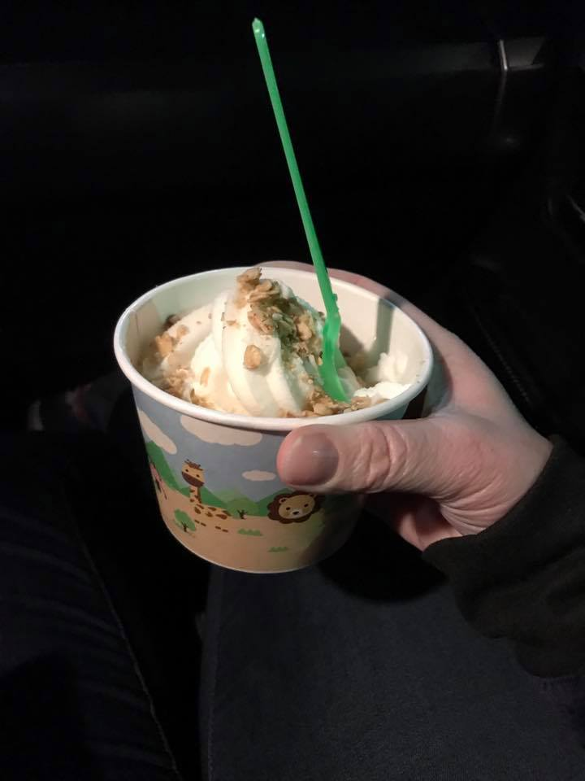
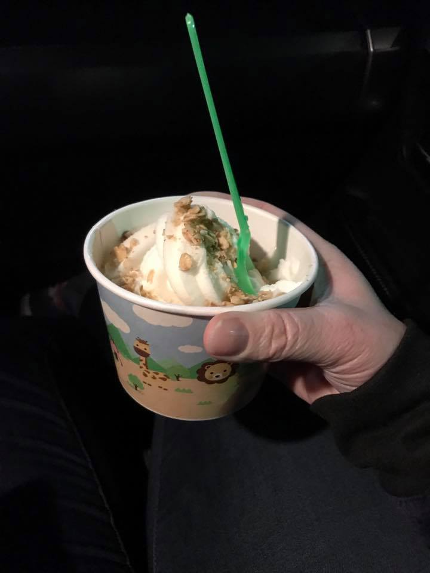

About
Spot On Yogurt is the area's first self serve frozen yogurt bar. It is specifically designed with the customer in mind. As the customer it is all about the freedom of choice. You pick and dispense the frozen yogurt and choose from over 40 toppings that range from granola to gummy bears. It is completely up to you - make as much or as little as you like! Spot On Yogurt is owned by Matt and Karolen La Rose. Karolen and Matt along with their two children, Ty (5) and Lauren (3) recently moved back to the LC Valley from Sacramento to raise their children and start Spot On Yogurt. Matt is from San Jose, California and has spent the past 16 years in events, entertainment and facility operations for professional and collegiate sports. He started his career at Arizona State University and recently worked at the VP of Operations and Events for the Sacramento River Cats (triple A of the Oakland A's). Early in his career he worked NFL Arizona Cardinal games, Fiesta Bowls and concerts such as U2 and Pink Floyd. More recently he booked shows with acts like Dave Matthew's Band, Lynyrd Skynyrd and the Black Eyed Peas and helped orchestrated the 2005 Triple A All Star game. Karolen (formerly Overberg) has been working in the sports, event management and non-profit sectors in sales, marketing, events, community relations and product development. She is a 1997 graduate of Lewiston High School and a 2001 graduate of Washington State University. We hope that we will have the opportunity to earn your business. We are committed to delicious yogurt, great service and fun atmosphere. Please stop by and visit us! We are right next door to Hastings.
 
